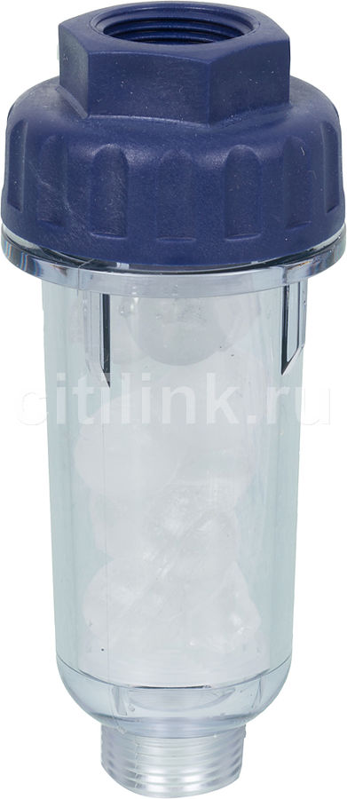

Фильтр для воды АКВАФОР Стирон
Описание товара

Купить фильтр для воды АКВАФОР Стирон (c засыпкой), для посудомоечных и стиральных машин.
Харакеристики товара
Фильтр устанавливается между стиральной машиной и трубой подачи воды.
Стандартные подсоединительные размеры 3/4" позволяют подключить его без каких-либо переходных колец. Содержит безопасную полифосфатную соль. 1 засыпка на 300 стирок.
Все права защищены